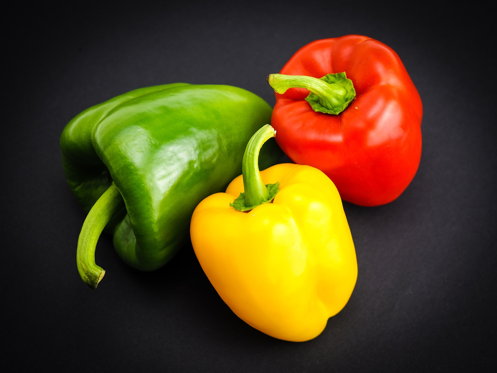

Alimentos saludables para tener siempre a mano:

Pimiento
Como buen vegetal que es, tiene un bajo aporte calórico (20 calorías por 100 gramos), de proteínas y de grasas, aportando fundamentalmente hidratos de carbono y fibra.
Este alimento también constituye una fuente importante de vitamina C, sobre todo los pimientos de color rojo.
No lo hemos dicho antes, pero la vitamina C es un potente antioxidante que, además, interviene en procesos tan importantes como la formación de colágeno, de glóbulos rojos, de huesos y de dientes.
Por si fuera poco, favorece la absorción del hierro de los alimentos y aumenta la resistencia frente a las infecciones.
Destaca también en los pimientos la alta concentración de carotenos, entre los que se encuentra la capsantina, otro pigmento antioxidante.

Garbanzo
El garbanzo se descubrió hace 10.000 años en Turquía y se dice que fue una de las primeras legumbres en ser cultivada.
Se trata de una leguminosa de la familia de las fabáceas, de amplia difusión en todos los países del Mediterráneo.
Su aporte energético supera al de la alubia o frijol, alcanzando las 343 kcal por 100 gramos.
Se lo debe al elevado contenido en hidratos de carbono (55 gramos por cada 100) y grasas (5 gramos).
¿Y no es mala tanta grasa? En absoluto. Porque son monoinsaturadas y polinsaturadas al 50%, o lo que es lo mismo, cardiosaludables.
Si a esto le añadimos que el aporte de colesterol del garbanzo es nulo, esta leguminosa presenta realmente un perfil graso ideal.
No acaba ahí la cosa. Además, su aporte proteico es elevado (casi 20 gramos), es rico en potasio y fósforo potasio, y la vitamina más destacada en su composición es el ácido fólico (180 ug)
Sardina
De los pescados nos quedamos con este por ser uno de los pescados grasos por excelencia, que en estos últimos años ha recibido mucha atención por su aporte de ácidos omega-3.
No hay que olvidar que el consumo asiduo de omega-3 se relaciona con un efecto beneficioso sobre enfermedades inflamatorias como la artritis reumatoide y las patologías oncológicas.
En lo que respecta a las vitaminas, este pescado presenta un aporte interesante de vitaminas liposolubles D, E y A.
La vitamina D es muy importante para nuestro metabolismo óseo, y las vitaminas A y E son potentes antioxidantes.
También presenta un aporte interesante de vitaminas hidrosolubles del grupo B, con importantes funciones en el aprovechamiento de los nutrientes energéticos.
Entre los minerales destaca su aporte en fósforo, tan importante para la formación de los huesos: consumiendo 200 gramos de sardinas ingerimos 100% de las recomendaciones diarias de este mineral.
Y es importante su aporte de calcio, eso sí, cuando se consume con espinas.
Arándano
Esta fruta es casi un 90% agua y apenas aporta calorías.
Su aporte de hidratos de carbono es escaso (6 gramos por cada 100), y el porcentaje de proteínas y grasas prácticamente anecdótico (0,6 gramos).
Lo que sí proporciona son cantidades importantes de fibra (5 gramos). Aunque su importancia nutricional tiene que ver sobre todo con los antioxidantes.
Y es que no solo es rica en vitamina C (22 mg por 100), sino que además contiene abundantes antocianos, unos potentes antioxidantes.
Los antocianos le confieren su color característico y, unidos al ácido oxálico o el ácido málico, son responsables de su sabor característico y de sus propiedades antisépticas a la hora de prevenir y tratar las infecciones urinarias.
Mango
Otro alimento que no debería faltar en nuestra despensa es la fruta del árbol Mangifera indica, de la misma familia botánica que el pistacho.
Es originario de la región del noroeste de la India (a los pies del Himalaya).
Desde el punto de vista nutricional, su contenido de agua es elevado (casi un 85%). Aporta 14 gramos de carbohidratos por 100 gramos, y su aporte de grasa es prácticamente nulo.
Como curiosidad, aporta también los ácidos tartárico y málico.
Además, su abundancia de fibras mejora el tránsito intestinal.
En el capítulo de las vitaminas destaca la vitamina C, con 37 mg por 100 gramos, así como las vitamina A y E.
Eso lo convierte en otra fuente interesante de antioxidantes, lo que nos ayuda a proteger a nuestro organismo de los fenómenos de envejecimiento, eliminando radicales libres.